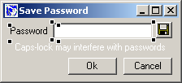

Win32::GUI::Loft Programmer's Reference -- how to incorporate
The GUI Loft windows into your Perl programs (not utterly
complete :)
Win32::GUI::Loft is the Runtime part of The GUI Loft.
The most important class is Win32::GUI::Loft::Design, which
is used to build the designed windows at runtime. A few important
methods are discussed below.
use strict;
use Win32::GUI;
use Win32;
use Win32::GUI::Loft::Design;
my $fileWindow = "fetch.gld"; #You created this using The GUI Loft
my $objDesign = Win32::GUI::Loft::Design->newLoad($fileWindow)
or die("Could not open window file ($fileWindow)");
my $win = $objDesign->buildWindow()
or die("Could not build window ($fileWindow)");
$win->Show();
Win32::GUI::Dialog();
#The Name property of the loaded window is "winFetch"
sub ::winFetch_Terminate {
return(-1);
}
#The -name of the button is "btnFetch"
sub ::btnFetch_Click {
#The Name property of the loaded window is "winFetch"
defined(my $win = $Win32::GUI::Loft::window{winFetch}) or return(1);
#There is another control (a Textfield) in the Design called "tfURL"
my $url = $win->tfURL->Text();
return(1);
}
Install the PPM packages found in the ``PPM'' directory.
Run install.bat.
The Runtime module is used in your programs to create the
windows. You'll need to install the Runtime before you try
the Demo programs.
Note: You will need to run install.bat each
time you download a new release! install.bat will remove,
then reinstall the new modules.
Also, make sure the following modules are present:
Win32
Win32::GUI
There is a binary and a source distribution.
The binary is totally freestanding. Just run the program,
and it should work.
The source relies on the Runtime, so install the PPMs first.
The source is also dependent on the modules found in the Modules
dir. Install them, then run the Perl file ``lib/tgl.pl''
The Demo programs are located in the Demo directory. After
you have installed the Runtime PPMs, just run the Perl scripts
to see them in action.
The code is commented to point out interesting and important
things, so a code walkabout could be educational.
A simple demo of the Win32::GUI::Loft::Design class.

To demonstrate the timer, I chose to implement one very good
user interface detail in some versions of the e-mail program
Eudora; when Caps-lock is active, Eudora will warn the user
that the password probably will get screwed up. The demo warns
regardless of the Caps-lock state.
Things to learn from:
- How to create the window
- How to access the window from event handlers
- Password-style textfield
- Button with bitmap image
- Timer used to blink text (yeah, I know... :)
Enter a URL and Fetch will do a GET and display the HTTP
headers and the raw HTML.
This is a great example of a quick GUI wrapper around a simple
Perl program. A colleague asked if I knew how to see the HTTP
response of a GET request.
-``Sure, that's a few lines of Perl''
Whining. -``Isn't there a Windows program to do that already?''
Well, fifteen minutes later, there was. And I spent most
of that time trying to find the HTTP::Response method returning
the HTTP headers (headers_as_string).
Things to learn from:
- Keep the .gld file opened in The GUI Loft while you browse
the code. You'll need to check control names and stuff.
- Look at how the Resize properties are set.
- Look at how the TabStrip is done using Clusters.
- In the btnFetch_Click event handler, take note of how
to access the Win32::GUI Window object and the contained
controls, e.g. $win->tfURL->
Text()
Simple program to display files in a RichEdit control.
Things to learn from:
- How to attach a menu to your window during the build.
- How to manually code the resizer stuff when there is
a Splitter control involved.
- How to separate the actual GUI code from your application
code as much as possible.
For real world examples, look in the Loft\resource directory.
Here you can find the windows and dialogs used in The GUI
Loft.
If you decide to experiment or change anyhing, it might be
a sligthly clever idea to make a backup copy first. But you
already knew that... ;)
Until this section gets a little more complete, the best
way to learn is to check out the code in the Demo programs.
It's not overly complicated, and the demos are nicely commented.
The Name property, and how to change it
Adding a menu to your window is really simple.
Create the menu the usual way, create the Design object,
then set the mnuMenu property before you actually build the
window. An example from the FileDisplay demo program:
my $fileWindow = "filedisplay.gld";
my $objDesign = Win32::GUI::Loft::Design->newLoad($fileWindow);
$objDesign->mnuMenu( Win32::GUI::MakeMenu(
"&File" => "mnuFile",
" > E&xit" => "mnuFileExit",
) );
my $win = $objDesign->buildWindow();
[Note: This example doesn't contain error checking. The demo
program does.]
This section contains advice on how to do Win32::GUI coding
with the windows you designed in The GUI Loft.
There is a method rhClusterWingc() on your Design objects
you can use to access the clusters and their controls.
$deisgn->rhClusterWingc() is a hash ref with (key = Cluster
name, value = array ref (with Win32::GUI controls)).
#Let's say your created window is called winTest
defined(my $win = $Win32::GUI::Loft::window{winTest}) or return(1);
my $design = $Win32::GUI::Loft::design{winTest};
#Here are the clusters
print join(", ", keys %{$design->rhClusterWingc()}) . "\n\n";
#Display all clustered controls
print Dumper($design->rhClusterWingc());
When you create applications using Win32::GUI::Loft, you
need to supply the modules somehow along with the Perl program.
Include the PPM files in your distribution script, or point
to The GUI Loft web site.
The GUI Loft binary is a PerlApp application, and so any
program you write using Win32::GUI::Loft should work equally
well in that regard.
This is actually a really handy little program, since it
totally eliminates the deployment problem.
I haven't tried using Perl2Exe and other similar programs,
so please report how that works if you give it a try.
Originally, I planned to have The GUI Loft generate Perl
code to build the window in addition to have a runtime module
create it. I have since abandoned that idea.
Why? There are certainly advantages with producing code:
- Programmers new to The GUI Loft will feel better when
they can see that ``yes, this is my Perl code''. It's tangible,
and nothing is hidden in a weird class they didn't write
themselves.
- People can learn from it. Create things in WYSIWYG mode,
export as Perl and see exactly how this or that was done.
Using Win32::GUI should ideally mean that the programmer
is exposed to Win32::GUI code and familiar with how it works.
- Code can be tweaked to produce 100% what's desired. If
it's possible within the realms of Win32::GUI and Win32::API,
it can be done no matter what.
- Clever programmers can easily add controls not yet supported
by The GUI Loft.
However, there are a few disadvantages with exported code
that need mentioning:
- Generated code is ``one way''. If you're gonna modify
it, which is kind of the point, parsing it is bound to be
fragile and random at best. Not something I would like to
rely on anyway.
- Generated code is static, running code is dynamic. Say
you tweaked your code to perfection and then needed to change
the layout in The GUI Loft? Regenerate the code and retweak?
Argghhhh!!! What a maintenance nightmare!
With The GUI Loft you can provide code
to tweak the controls during the build. You can also incorporate
Custom controls in your Design and later on generate them
with code, giving you the best of both worlds.
- Maybe a minor point: the generated code is unlikely to
comply with your coding standards.
- As I started to implement more and more features of The
GUI Loft I came to the realisation that any Perl code I
would generate to produce the same result would inevitably
require a lot of runtime modules (at least
Win32::GUI::Loft::Design) to work in order to avoid duplicate
code; The GUI Loft (or rather the class Win32::GUI::Loft::Design)
had become an extension of Win32::GUI.
My vague future plans emphasize this even more, but let
me give them some more thought before I elaborate.
Separate the specifics of your current GUI implementation
from your application as much as possible.
The GUI Loft will shield you from code. That's good and bad.
It's good because you don't need to know everything about
a subject to be able to use it, the same way you e.g. don't
need to understand the finer points of the POP3 protocol to
use Mail::POP3Client. That's reuse of code and knowledge.
That's what will bring productivity gains.
But it's also bad, because The GUI Loft can only take you
so far before you run into things that aren't implemented,
or that fall outside the scope of the program. Then you have
to do the difficult things yourself anyway (only with a solid
base and a nice framework). But you still have to do the work.
So, study Win32::GUI code and learn how things are done.
Use the help files under the Help menu. If you are going to
use Win32::GUI then you'll have to know how it works. There
is no way around that. And when the capabilities of Win32::GUI
ends, you'll have to look at the Win32 API and Aldo's Win32::API
module. Get used to it.
If you're serious about Win32::GUI, I recommend a brief tour
of GUI.xs and GUI.pm.
You'll get a better view of what's in there, and a few hints
of what you need to look for in the Win32 docs. Armed with
that, it's possible to do quite a lot of things that aren't
fully supported by Win32::GUI (or just plain undocumented
:)
The docs - [ship them with a nice ToC]
The sample apps
Win32 SDK - donwload and online link
WINUSER.H ? Copyright on that one? :(
Other bookmarks
The mailing list + archive
Erick Bourgeois ``cookbook'' site
Win32::GUI::Loft is Copyright (c) Johan Lindström, johanl@bahnhof.se
The Perl Artistic license applies.
|